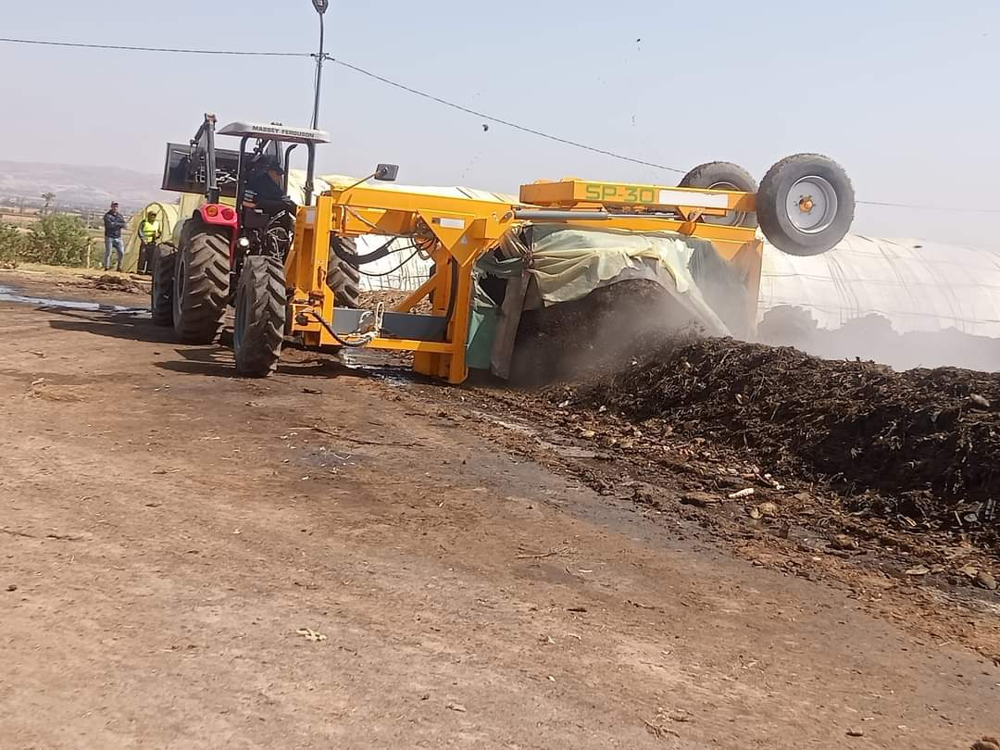
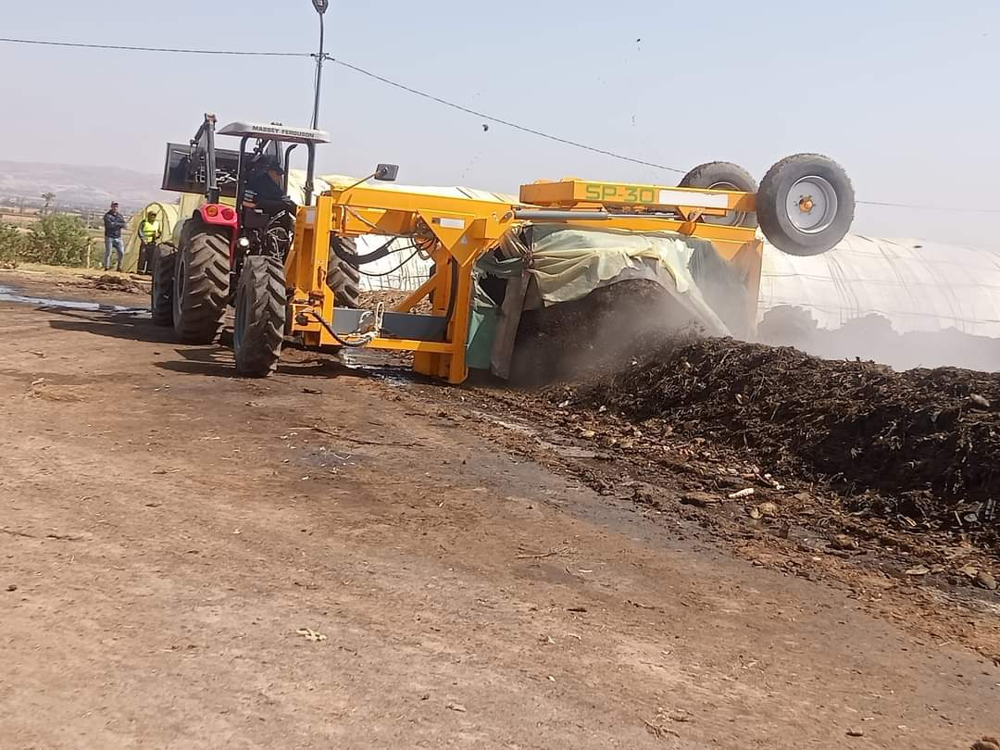

مديرية البيئة
تعريف مديرية البيئة
مديرية البيئة بولاية معسكر هي الجهة الحكومية المسؤولة عن تنفيذ السياسات البيئية، وحماية الموارد الطبيعية، وتحسين جودة البيئة في الولاية. تهدف المديرية إلى تحقيق التنمية المستدامة من خلال تخطيط وتنفيذ مشاريع بيئية تشمل الحفاظ على المياه، وإدارة النفايات، وتطوير المناطق الخضراء.متابعة

لجنة حماية البيئة
تعمل لجنة حماية البيئة على تنفيذ ومراقبة السياسات البيئية للحد من التلوث وحماية التنوع البيولوجي في الولاية. تقوم اللجنة بعمليات تفتيش دورية للتأكد من التزام المؤسسات بالمعايير البيئية.متابعة
لجنة إدارة النفايات
تهدف لجنة إدارة النفايات إلى تحسين أنظمة جمع ومعالجة النفايات في الولاية. تنسق اللجنة مع البلديات والمؤسسات المحلية لتطوير برامج إعادة التدوير وتقليل النفايات متابعة

لجنة التشجير وتطوير المناطق الخضراء
تعمل اللجنة على تعزيز مشاريع التشجير وتطوير الحدائق العامة والمناطق الخضراء في الولاية. تشمل الأنشطة غرس الأشجار في المناطق الحضرية والريفية وتطوير المتنزهات العامة
مشروع تحسين جودة المياه
يهدف المشروع إلى تحسين جودة المياه في ولاية معسكر من خلال تطوير محطات معالجة المياه وتحديث شبكات توزيع المياه. يشمل المشروع مبادرات للحفاظ على الموارد المائية وتقليل التلوث.متابعة
برنامج إعادة التدوير
برنامج شامل لإعادة التدوير يهدف إلى تقليل كمية النفايات الصلبة وتحويلها إلى مواد قابلة للاستخدام. يشمل البرنامج حملات توعوية وتوفير حاويات مخصصة لإعادة التدوير في جميع أنحاء الولاية.
حملة التشجير السنوية
حملة سنوية لغرس الأشجار بمشاركة المجتمع المحلي والمدارس. تهدف الحملة إلى زيادة المساحات الخضراء وتحسين جودة الهواء في ولاية معسكر
معرض الصور


 
